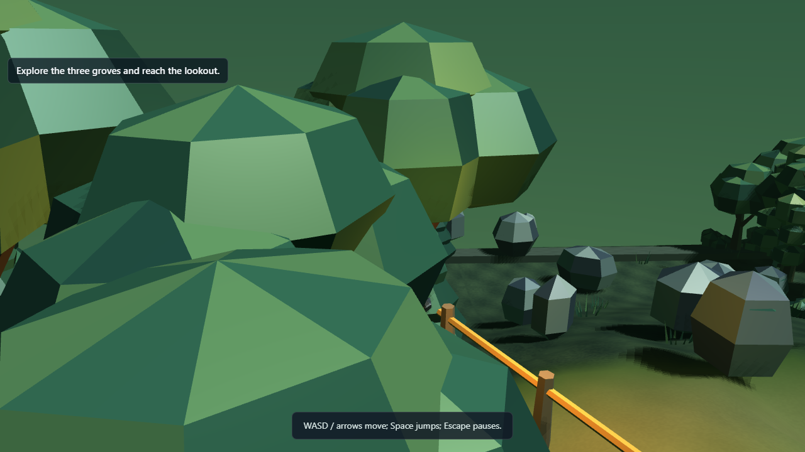
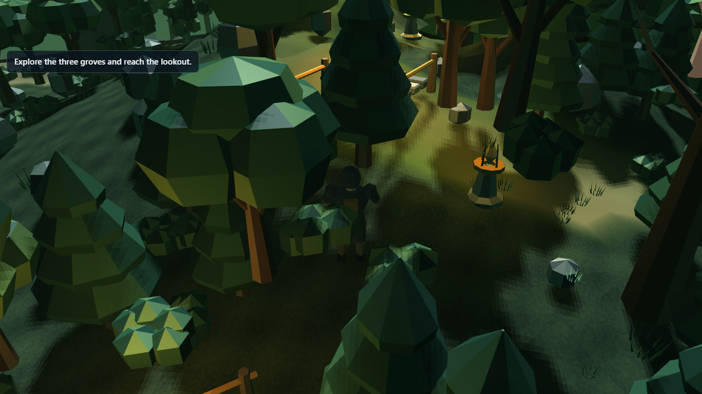
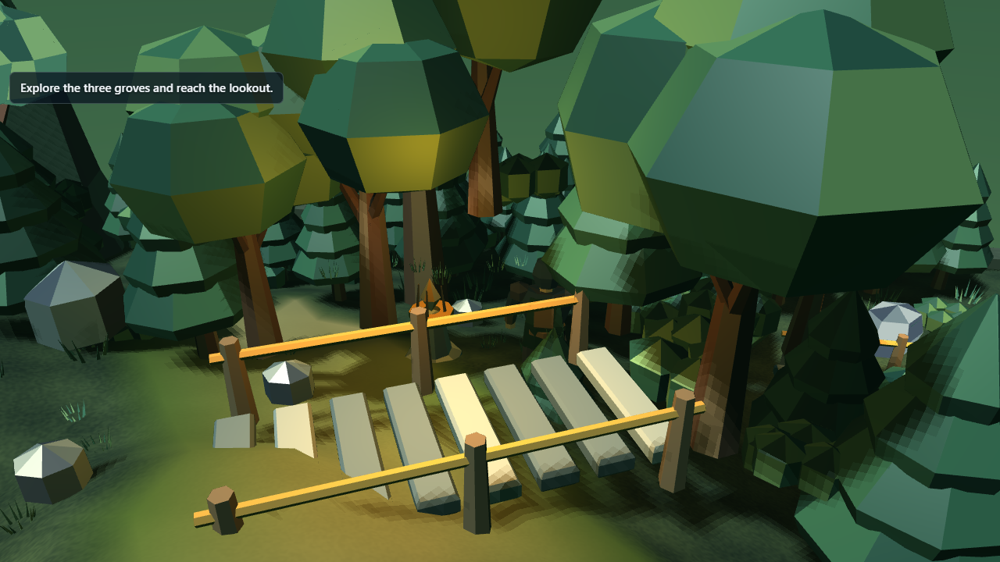

Forest Range
visual 4 · clarity 4 · layout 4 · audio 3 · presentation 4 · uniqueness 4




What it is: A woodland trail through three groves. Follow the amber waystones to the old lookout.
Engine capability: Woodland exploration and reusable vegetation
Remaining weakness: Canopy still occludes optional side views
Play standalone